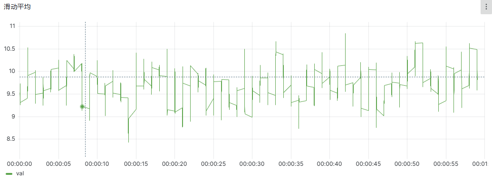

工业试验平台高频数据的存储和处理分析
DolphinDB 作为集成了高容量高速度流数据分析系统和强大编程语言的一站式解决方案，旨在为用户提供快速存储、检索、分析和计算庞大的结构化数据服务。本文将提供一个轻量化的工业试验平台数据处理解决方案，快速简单的实现海量数据采集、存储、处理和分析。帮助企业提高产品的质量和竞争力。
1. 场景介绍
工业试验平台在工业测试领域广泛应用，它是一种集成了各种传感器、数据采集器、控制器、计算机等设备的系统，可以提供模拟高速、高温、高湿、高压等各种从简单机械到复杂化学、生物的工业测试环境，并能对各种类型的产品进行全面、准确、可靠的测试。其典型应用场景包括汽车工业、航空航天、能源电力、医疗化工等领域。
1.1. 场景特点
工业试验平台的数据存储与处理面临多方面的挑战：
- 来自不同设备、不同频率的多源异构数据接入与存储
- 平台需要对所有可能影响结果的传感器和仪器设备进行可用性监控、故障诊断和健康管理，以保障试验结果的准确性。
- 考虑到效率和成本，试验通常在短时间内进行，但会生成海量的测试数据，因此系统需要支持千万点每秒的高频写入。
- 最终试验结果通常是多维度的，需要系统具备复杂的计算和分析能力。以航空器、车辆载具的故障模式影响及危害度分析（FMECA）为例，试验结果可能包括故障模式清单、危害性矩阵图以及 FMEA/CA 表等。因此，流式计算和复杂指标计算的能力对于平台至关重要。
1.2. 解决方案
上述工业试验平台在数据存储与处理时所面临的问题，可由 DolphinDB 的数据接入、分布式存储和流计算功能为支撑，搭建以下解决方案：
- 多源异构数据融合：依托于丰富的插件生态，DolphinDB 既支持 Kafka、MQTT、MySQL、Oracle 等外部数据源的写入，也支持批量文件写入，实现了不同频率、类型设备的数据写入与融合。
- 实时异常检测：DolphinDB 实时计算引擎用简单表达式定义复杂异常规则，实时筛查状态异常数据，保障设备的正常运转。
- 实时计算平台：DolphinDB 内置丰富的函数和流计算引擎，可完成时序数据的 ETL、多维度聚合分析和计算、实时预警和机器学习等实时计算任务。
2. 方案实施
本章将通过 DolphinDB 快速简单地实现海量数据的采集、存储、处理和分析。首先介绍 DolphinDB 的安装和部署，讲解数据建模的过程，接着使用 DolphinDB 实现数据回放、状态保持计算、波形录制等多种功能。
2.1. 安装部署
- 下载官网社区最新版，建议 2.00.10 及以上版本。下载链接：DolphinDB 下载
- Windows 操作系统下的解压路径不能包含空格，避免安装到 Program Files 路径下。详细步骤可以参考官网教程：单节点部署与升级
- 本次测试使用免费的社区版，企业版 license 可申请免费试用。
安装及测试过程中，有任何问题，可添加小助手微信（dolphindb1）咨询。
2.2. 数据建模
在该案例中，1 台设备有 5000 个测点，每个测点的采集频率为 50Hz（即每秒采集 50 次）。我们使用宽表进行建模，它包含 5002 个字段，分别为时间戳、设备号和测点 1 到测点 5000。
首先建立一个组合分区的分布式数据库，以小时和设备号哈希值为组合分区依据，通过时间戳和设备号进行分区索引。
第一步：建库
在此处，我们采用时间分区和哈希分区组合的方式进行数据切分和建模。
具体而言，当设备产生的数据量在每小时、每天、每月、每年等时间间隔内持续稳定在 100MB 到 1GB 的最佳实践范围内时，我们仅使用时间值作为分区依据进行数据建模。如果时间分区的大小超过 1GB，则可以根据哈希值来建立第二级哈希分区。哈希分区将字符串或数字等数据类型转换成哈希值，并将相同哈希值的数据分配到同一分区内，以实现数据切分。简单来说，如果我们希望将第一级分区切分成 10 份，则第二级分区可以设置为哈希 5 分区。分区教程可见：DolphinDB 分区教程
在本案例中，每秒会生成 50 条记录，即每小时将生成 180,000 条记录。因此，每小时的数据量大小为 3.35GB。对于每天产生的数据，我们会首先进行小时分区切分，然后对于每个小时的数据，会基于设备 id 的哈希值再进行切分。最终，可以通过时间戳和设备 id 进行分区索引。
//构建分区方式，构建小时+哈希5的组合分区
dbname="dfs://db_test"
db_hour=database(partitionType=VALUE,partitionScheme=[datehour(2022.10.01)])
db_hash=database(partitionType=HASH, partitionScheme=[SYMBOL,5])
db=database(directory=dbname,partitionType=COMPO,partitionScheme=[db_hour,db_hash],engine=`TSDB)第二步：建表
表的信息如下：
| 字段名 | ts | deviceid | v1 | … | v5000 |
|---|---|---|---|---|---|
| 字段描述 | 时间戳 | 设备唯一 ID | 测点 1 | … | 测点 5000 |
| 数据类型 | TIMESTAMP | SYMBOL | FLOAT | FLOAT x 4998 | FLOAT |
| 字节占用 | 8 | 4 | 4 | 4 x 4998 | 4 |
//新建“采集表”，宽表，单条记录 5002 个字段
n=5000 //采集点数量
tablename="collect" //表名
colNames=`ts`deviceid <- ("v"+string(1..5000)) //表字段
colTypes=`TIMESTAMP`SYMBOL <- take(`FLOAT,5000) //字段类型
//创建表t
t=table(1:0,colNames,colTypes)
//构建分布式表
pt=createPartitionedTable(dbHandle=db,table=t,tableName=tablename,partitionColumns=`ts`deviceid,sortColumns=`deviceid`ts)第三步：数据接入
DolphinDB 支持对接消息中间件和标准协议实时接入试验平台数据，以用于实时监控预警等场景。也支持批量导入文件，在试验完成后导入数据进行分析，用于不需要实时监控的场景，以减轻系统压力。详情见DolphinDB 数据导入概述及DolphinDB 插件消息中间件。
在本教程中，我们使用自定义函数模拟设备 d001 实时生成一小时数据，共 180,000 条数据，将生成的数据实时写入 DolphinDB 数据库中，并通过数据回放，展示实时流计算功能。详细的实现过程请参考文章末尾的完整示例代码。
2.3. 功能实现
DolphinDB 作为集成了高容量高速度流数据分析系统和强大编程语言的一站式解决方案，旨在为用户提供快速存储、检索、分析和计算庞大的结构化数据服务。在以下内容中，我们将介绍 DolphinDB 在 SQL 查询、数据分析、数据导出和备份、数据导入和备份恢复、关系模型、数据回放、波形录制、存储过程、状态保持计算、时间序列聚合引擎和磁盘查询等方面所提供的丰富功能。
以下各节中的代码仅展示了实现各项功能的核心语句，详细的实现过程请参考文章末尾的完整示例代码。有关 DolphinDB 的详细文档，请参阅 DolphinDB 文档中心。
2.3.1. SQL 查询
DolphinDB 具有丰富而多样化的查询功能，其中包括总数查询、条件查询、单点查询和范围查询等多种功能，可以满足客户的不同查询需求。并且，DolphinDB 能够轻松地处理海量数据，实现毫秒级的查询响应。
/**** 数据查询 Demo ****/
//加载表，赋值给 pt （表变量赋值仅加载元数据）
pt=loadTable(database="dfs://db_test",tableName=`collect) //pt(ts,deviceid,v1,...,v5000)
//查看数据总数
select count(*) from pt
//数据检查
select max(ts),min(v1),max(v2),avg(v3),sum(v4),last(v1) from pt //最大值、最小值、平均值、最后一条数据 的查询
select top 10 v1,v2,v3 from pt where ts between 2022.01.01 00:00:00.000 : 2022.01.01 00:01:00.000
//单点查询（返回单值）
timer t = select v1 from pt where deviceid='d001',ts=2022.01.01 00:00:00.001
//范围查询
timer t=select ts,v1 from pt where deviceid='d001', ts between 2022.01.01 00:00:00.000 : 2022.01.01 00:00:01.0002.3.2. 数据分析（降采样，滑动平均计算）
降采样是指将数字信号的采样率降低的过程，即通过去除部分采样点来减少信号的采样率。降采样通常用于降低信号的复杂度，以便减少计算量和存储空间。DolphinDB 为用户提供了 bar 函数，能够轻松实现降采样过程，帮助用户有效管理大规模数据。
滑动平均，也叫做指数加权平均，可以用来估计变量的局部均值，使得变量的更新与一段时间内的历史取值有关。通过 DolphinDB 提供的 mavg 函数，用户能够使用一条语句轻松实现滑动平均的计算，这极大地提高了数据的处理效率。
/**** 数据分析 ****/
//每 30 秒钟，取一条数据（降采样）
select ts,v1 from pt context by bar(ts,30s) limit -1 //limit -1 代表取最后一条记录
//30 秒钟滑动平均计算
timer t=select ts,deviceid,mavg(v1,30) as val from pt where deviceid=deviceid , ts between 2022.01.01 00:00:00.000 : 2022.01.01 00:01:00.000 context by deviceid
2.3.3. 数据导出和导入
为了方便用户在不同数据源和目标之间进行数据转换和传输，DolphinDB 提供了多种数据导入导出方式。在数据导出方面，DolphinDB 支持两种方式：使用 saveTable 将一个表对象以二进制形式保存到文件中，或使用 saveText 将数据保存到文本文件中。
DolphinDB 还提供了多种灵活的数据导入方法，以帮助用户轻松地从多个数据源导入海量数据。对于本地数据，DolphinDB 提供了两种方式：CSV 文本文件导入和二进制文件导入。对于外部数据，DolphinDB 支持多种方式：二进制文件导入，ODBC、MySQL、MongoDB、HBase 等第三方数据库导入，还支持连接消息中间件以发布和订阅消息。
/**** 数据导出和导入 ****/
//数据准备：将1小时数据，赋值给临时表
t=NULL
t=select * from pt where ts between 2022.01.01 00:00:00.000 : 2022.01.01 01:00:00.000
//数据准备：路径，文件名
path=getHomeDir()
filename="savetable_output.csv"
//1. 导出表
db=database(directory=path+"/output_db")
saveTable(dbHandle=db,table=t,tableName=`collect)
//2. 导出 csv
saveText(obj=t, filename=path+"/"+filename)
//3. 导入表
db=database(directory=path+"/output_db")
t=loadTable(database=db,tableName=`collect)
//4. 导入 csv
t=NULL //释放内存
ds=textChunkDS(path+"/"+filename,1000)
mr(ds,append!{loadTable("dfs://db_temp2","collect_temp")},,,false);2.3.4. 数据备份和备份恢复
DolphinDB 提供了简单易用的数据备份和恢复功能，帮助用户保护重要数据。使用 DolphinDB 编程语言，用户可以自定义所需的备份策略和恢复方案。DolphinDB 以分区为单位进行数据备份，每个分区备份为一个数据文件。用户可以使用 backup 函数指定要备份的数据库、表或分区，以及备份文件的路径。使用 migrate 函数可以恢复数据库中已备份的数据。
/**** 数据备份和备份恢复 ****/
//1. 路径
path=getHomeDir()
//2. 备份
backup(path,<select * from loadTable("dfs://db_test","collect")>,true);
//3. 恢复备份
//使用 migrate 函数，完整恢复备份。恢复到新建的表中。
migrate(backupDir=path,backupDBPath="dfs://db_test",backupTableName="collect",newDBPath="dfs://db_temp3",newTableName=("collect_temp"));
loadTable(database="dfs://db_temp3",tableName="collect_temp") 2.3.5. 关系模型
DolphinDB 对关系模型的支持包括以下几点：
- 除了包含时间戳的时序数据，还支持存储和处理不含时间戳的关系型数据
- 支持标准的 SQL 语言。包括常用的 select、insert、update 和 delete 等操作，group by 和 order by 等子句，还扩展了 context by 和 pivot by 以扩展数据的分析能力
- 支持复杂的多表关联，包括 inner join、left join、left semijoin 和 full join，已经拓展的 asof join 和 window join 以便用户能够方便地将不同数据表中的数据进行关联和整合。
这些功能的支持使得 DolphinDB 能够更好地满足用户对于数据处理和分析的需求，提高工作效率和数据处理的准确性。
/**** 关系模型 ****/
//关联查询
pt=loadTable("dfs://db_test",`collect) //pt（ts,deviceid,v1,...,v5000） dt(deviceid,model,ip)
select pt.ts,pt.v1,pt.v2,dt.* from pt left join dt on pt.deviceid=dt.deviceid where pt.ts=2022.01.01 00:00:01.0012.3.6. 数据回放
DolphinDB 提供了历史数据回放的功能。该功能可以帮助用户更加方便地发现历史数据中的异常，从而有助于排查试验故障。具体实现方式是通过 replay 函数，将内存表或数据库表中的记录按照一定速率写入到目标表中，以模拟实时数据流不断注入目标表的场景。
replay 函数支持单表回放和多表回放两种模式。在最基础的单表回放模式中，一个输入表将被回放至一个具有相同表结构的目标表中。而在多表回放模式中，多个输入表将被回放至多个目标表中，且输入表与目标表一一对应。
通过 DolphinDB 的历史数据回放功能，用户可以更加灵活地进行数据分析，并且能够更加快速地定位数据异常问题。这一功能的应用范围非常广泛，可以被广泛应用于各种数据分析场景中。
/**** 历史回放功能（可用于试验故障排查） ****/
//1. 新建流数据表，容纳回放数据
share streamTable(1000:0,`ts`deviceid,[TIMESTAMP,SYMBOL]) as replayStream
for(i in 1..3){ //取测点v1,v2,v3用于演示
addColumn(replayStream,`v+string(i),DOUBLE)
}
//2. 数据回放（10 分钟）
rate=1 //回放倍速
begintime=2022.01.01 00:00:00.000 //数据开始时间
endtime =2022.01.01 00:10:00.000 //数据结束时间
t=select ts,deviceid,v1,v2,v3 from pt where ts between begintime:endtime order by ts,deviceid
//3. 批处理调用 replay 函数，后台执行回放
submitJob("replay_output", "replay_output_stream", replay, t,replayStream, `ts, `ts, rate,false)
//4. 展示回放数据（top 1000）
t=select * from replayStream limit 1000
plot(t.v1,t.ts,"top 1000 value 1")数据回放
2.3.7. 波形录制
录制某段波形数据在工业场景中是一项很常见的需求，录制关键数据可以提高故障排查的效率。例如，当某个指标出现 20% 的幅度偏移时，记录前 10 秒和后 10 秒内的数据，自动保存备查。在 DolphinDB 中能通过自定义函数轻松实现波形录制功能，并且可以根据用户的需求进行个性化功能定制。
/**** 录制某段波形数据 ****/
//1. 建表，保存录制信息
n=5000 //采集点数量
dbname="dfs://db_recodeing"
tablename="recode"
cols_info=`ts`deviceid
cols_type=`TIMESTAMP`SYMBOL
t=table(1:0,cols_info,cols_type)
for(i in 1..n){
addColumn(t,`v+string(i),DOUBLE)
}
db_hour=database(partitionType=VALUE,partitionScheme=[datehour(2022.10.01)])
db_hash=database(partitionType=HASH, partitionScheme=[SYMBOL,5])
db=database(directory=dbname,partitionType=COMPO,partitionScheme=[db_hour,db_hash],engine=`TSDB)
pt=createPartitionedTable(dbHandle=db,table=t,tableName=tablename,partitionColumns=`ts`deviceid,sortColumns=`deviceid`ts)
//2. 自定义录制函数
def funRecodeData(wtid,mutable begintime,second){
//合法性判断
if(second>180){
strMsg='录制时间需小于3分钟'
return strMsg
}
if(typestr(begintime)=="STRING"){ begintime=timestamp(begintime) }
endtime=temporalAdd(begintime,second,`s)
//录制未来数据
diff=endtime-now()
if(diff>0){
sleep(diff)
}
//录制
t=select * from loadTable("dfs://db_test",`collect) where ts between begintime:endtime and deviceid=wtid
pt=loadTable(database="dfs://db_recodeing",tableName=`recode)
pt.append!(t)
//返回消息，供应用端展示
rownum=t.size()
strMsg='录制行数：'+string(rownum)+''
return strMsg
}
//3. 调用函数
deviceid = 'd001'
second = 5
begintime = 2022.01.01 00:10:00.000
msg=funRecodeData(deviceid,begintime,second)
msg2.3.8. 存储过程
DolphinDB 提供了函数视图来灵活地控制用户对数据库和表的访问。使得用户即使不具备读写数据库原始数据的权限，也可通过执行函数视图，间接访问数据库，得到所需计算结果。例如，用户不能查看个别患者的名称和年龄等原始数据，但是可以获取患者的总数与平均年龄。
/**** 存储过程的实现（函数视图） ****/
//建立函数视图（存储过程），可通过外部 API 调用该函数
addFunctionView(funRecodeData)
//删除函数视图（存储过程）
dropFunctionView(`funRecodeData)2.3.9. 状态保持计算
在工业场景中，统计设备使用时长的需求十分常见。通过对设备使用时长的统计，可以实现设备保养预警和设备生命周期管理，同时也能够帮助运维人员更好地进行设备维护，从而延长设备的使用寿命。DolphinDB 提供了统计设备使用时长的功能，可以为运维人员制定维保计划提供数据支持，实现预防性维护。
具体实现过程中，设备信息表会记录不同设备的开关机时间，表中包含时间戳、设备 ID 和设备状态三个字段。统计设备使用时长需要计算设备的关机时间和开机时间之差，并将差值进行总和。
DolphinDB 使用列式存储，可以轻松地计算出每列相邻元素之间的差值，因此可以快速计算出设备使用时长。相比之下，MySQL 和 PostgreSQL 等传统的关系数据库使用行式存储，需要迭代才能计算出每列相邻元素之间的差值，这种方法繁琐复杂且耗时长。
/**** 统计设备使用时长 ****/
//1. 生成数据
n=100
times=datetime(2022.01.01)+1..864000
ts=sort(rand(times,n))
status=rand(1..3,n)
deviceid=rand("D"+lpad(string(1..9),2,"00"),n)
t=table(ts,deviceid, status)
//2. 汇总设备状态时长
dt = select *, deltas(ts) as duration from t context by deviceid
dt=select sum(duration)/3600 as totalhour from dt where status=1 group by deviceid, status
//3. 返回使用时长
select deviceid,string(totalhour)+"小时" as totalUse from dt order by totalhour desc2.3.10. 时间序列聚合引擎
DolphinDB 数据库功能强大，可以在实时数据流计算场景中高效地进行计算。用户可以通过简单的表达式实现复杂的流计算。DolphinDB 的流式数据处理引擎能够实现低延迟高吞吐的流式数据分析，并提供了十种不同的引擎以满足不同的计算需求。此外，DolphinDB 数据库支持多种数据终端输出，如共享内存表、流数据表、消息中间件、数据库和 API 等。在计算复杂表达式时，用户还可以通过级联多个流数据引擎来实现复杂的数据流拓扑。此外，DolphinDB 数据库还提供了 createTimeSeriesEngine 函数，可以进一步提高计算效率，实现基于时间的滑动窗口或滚动窗口进行实时计算。
/**** 时间序列聚合引擎 ****/
//定义保存计算结果的流表
share streamTable(1000:0, `ts`deviceid`v1`v2`v3,[TIMESTAMP,SYMBOL,FLOAT,FLOAT,FLOAT]) as calc_result
//计算引擎，实时计算均值指标（窗口 10s，步长 1s）
tsAggr_iot = createTimeSeriesEngine(name="tsAggr_iot", windowSize=10*1000, step=1*1000, metrics=<[avg(v1),avg(v2),max(v3)]>, dummyTable=replayStream, outputTable=calc_result, timeColumn=`ts, keyColumn=`deviceid)
subscribeTable(tableName="replayStream", actionName="act_tsAggr_iot", offset=0, handler=append!{tsAggr_iot}, msgAsTable=true, batchSize=50, throttle=1, hash=0)
t=select top 100 * from calc_result order by ts desc
title=select min(ts),max(ts) from t
plot(t.v1,t.ts,title.min_ts[0]+" ~ "+title.max_ts[0])ame="collect", diskUsage=true,top=0})3. 性能测试
3.1. 测试环境
本文将通过 DolphinDB 数据库，以脚本的形式实现大型试验平台的以上功能。
部署环境如下：
| 测试环境配置项 | 参数 |
|---|---|
| 服务器 | DELL OptiPlex 5000 windows 10 专业版 |
| CPU | 12th Gen Intel(R) Core(TM) i5-12500 3.00 GHz |
| 内存 | 16G |
| 磁盘 | SSD 1.5T |
| 服务端 | DolphinDB 2.00.10.9（Windows） |
| 客户端 | VSCode 1.78.2（extension for DolphinDB v2.0.1103） |
模拟一次持续 1 小时的试验数据。
| 测试数据集 | 内容 |
|---|---|
| 采集环境 | 1 个小时的试验数据，每秒 24 万采集点数据（50 条/秒） |
| 记录行数 | 180,000 行 |
| 磁盘占用 | 3.35G |
| 字段数量 | 5,002 |
| 字段样式 | 时间戳 ts，设备号 deviceid，测点采样值 v1~v5000（FLOAT 类型） |
3.2. 测试结果
我们对 DolphinDB 的性能进行了测试，测试结果如下表。从表格中可以看出，在处理 180,000 条数据时，DolphinDB 的查询响应时间均在毫秒级别。这表明 DolphinDB 在处理大规模数据时表现出了出色的性能。
| 测试类型 | 测试项 | 测试结果 |
|---|---|---|
| 写入性能 | 写入行数 | 217.5 行/秒 |
| 写入性能 | 写入点数 | 1,087,613.3 采集点/秒 |
| 查询性能 | count 总数 | 1.003ms |
| 查询性能 | 单点查询 | 3.002ms |
| 查询性能 | 范围查询 | 15.994ms |
| 查询性能 | 聚合查询（最大值、平均值等） | 5.036ms |
| 查询性能 | 30 秒降采样查询 | 14.997ms |
| 查询性能 | 30 秒滑动平均查询 | 15.003ms |
| 数据导入导出（1 小时数据） | 数据导出（3.35GB） | 23.6s |
| 数据导入导出（1 小时数据） | 数据导入（3.35GB） | 18.4s |
| 数据导入导出（1 小时数据） | csv 导出（7.81GB） | 1min 17s |
| 数据导入导出（1 小时数据） | csv 导入（7.81GB） | 1min 57s |
| 数据导入导出（1 小时数据） | 备份保存（2.44GB） | 1min 14s |
| 数据导入导出（1 小时数据） | 备份恢复（2.44GB） | 3min 33s |
4. 总结
以上为 DolphinDB 在工业试验平台的简单应用，可见 DolphinDB 特别适用于对速度要求极高的低延时或实时性任务，例如基于海量历史数据的交互式查询与计算、实时数据处理与监控等。当然上述内容仅仅是一个简单的 DolphinDB 使用案例，DolphinDB 除了上述简单的存储、分析之外，还能支持更加复杂的数据处理和业务逻辑限于篇幅，本文不作过多介绍。感兴趣的用户可查阅 DolphinDB 教程 进行更加深入的了解。
附录